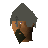
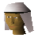
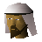
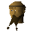
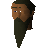

Toll Gate
Location at 3278, 3227 · Kingdom Of Misthalin
Open on the world map → Open in knowledge graph → Below: Toll Gate (underground)
NPCs
| NPC | Level | Spawns | Notable drops |
|---|---|---|---|
| 14 | 5 | ||
| 7 | 1 | Coins, Herb drop table, Fishing bait, Bronze arrow | |
| 5 | 2 | Coins, Water rune, Body rune, Goblin mail | |
| 2 | 10 | ||
| 2 | 11 | Coins, Water rune, Body rune, Goblin mail | |
| 2 | 1 | Bolt, Wizards hat, Hammer, Ball of wool | |
| 2 | 6 | Coins, Herb drop table, Bolt, Fishing bait | |
| 2 | 1 | Coins, Herb drop table, Bolt, Fishing bait | |
| 1 | 1 | Feather | |
| 1 | 4 | ||
| 1 | 1 | ||
| 1 | 1 | ||
| 2 | |||
 Border Guard | 2 | ||
| Butterfly | 1 | ||
| 6 | |||
 Dalal | 1 | ||
| shop | 1 | ||
| 1 | |||
| shop | 1 | ||
| 1 | |||
 Ima | 1 | ||
| 1 | |||
| 1 | |||
 Mubariz | 1 | ||
| 1 | |||
| 1 | |||
| shop | 1 | ||
 Silk trader | 1 | ||
| 1 | |||
| shop | 1 |